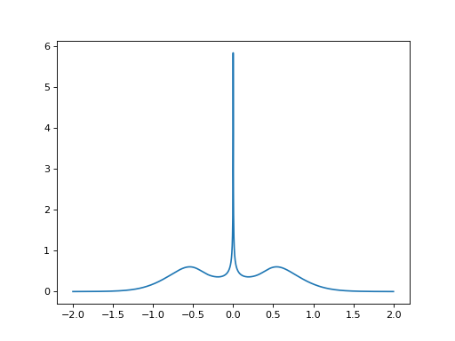

Anderson impurity model (SIAM)
To illustrate how the NRG solver works in practice, we show the example of one-orbital Anderson impurity embedded in a flat (Wilson) conduction bath. The interacting part of the local Hamiltonian of this problem is simply:
and the non-interacting Green’s function is:
In this example, there is a Coulomb interaction \(U\) on the impurity level,
which is at an energy \(\epsilon_f\). The bath Green’s function is
\(g(\omega)\), and it has a flat density of states over the interval
\([-1,1]\). Finally, \(V\) is the hybridization amplitude between the
impurity and the bath. Let us solve this problem with the NRG solver. Here is
the python script:
from nrgljubljana_interface import Solver, Flat
from h5 import *
# Parameters
D, V, U = 1.0, 0.25, 1.0
e_f = -U/2.0 # particle-hole symmetric case
T = 1e-5
# Set up the Solver
S = Solver(model = "SIAM", symtype = "QS", mesh_max = 2.0, mesh_min = 1e-5, mesh_ratio = 1.01)
# Solve Parameters
sp = { "T": T, "Lambda": 2.0, "Nz": 4, "Tmin": 1e-6, "keep": 2000, "keepenergy": 10.0, "bandrescale": 1.0 }
# Model Parameters
mp = { "U1": U, "eps1": e_f }
sp["model_parameters"] = mp
# Initialize hybridization function
S.Delta_w['imp'] << V**2 * Flat(D)
# Solve the impurity model
S.solve(**sp)
# Store the Result
with HDFArchive("aim_solution.h5", 'w') as arch:
arch["A_w"] = S.A_w
arch["G_w"] = S.G_w
arch["F_w"] = S.F_w
arch["Sigma_w"] = S.Sigma_w
arch["expv"] = S.expv
print("<n>=", S.expv["n_d"])
Running this script takes a few minutes and generates an
HDF5 archive file called aim_solution.h5. This file contains
the impurity spectral function, Green’s function, auxiliary Green’s function,
self-energy, and expectation values of local variables, here
\(\langle n \rangle\) and \(\langle n^2 \rangle\). Let us plot
the spectral function:
import numpy as np
import matplotlib as mpl
import matplotlib.pyplot as plt
from triqs.gfs import *
from h5 import *
def A_to_nparrays(A):
lx = np.array(list(A.mesh.values()))
ly = A[0,0].data.real
return lx, ly
with HDFArchive('aim_solution.h5','r') as ar:
# Expectation values
print("<n>=",ar['expv']['n_d'])
print("<n^2>=",ar['expv']['n_d^2'])
# Spectral function
A_w = ar['A_w']['imp']
lx, ly = A_to_nparrays(A_w)
plt.plot(lx, ly)
plt.show()
{kind=link}

As expected, the result shows a particle-hole symmetric impurity spectral function.
Let us now go through the script in some more detail:
from nrgljubljana_interface import Solver, Flat
from h5 import *
These lines import the classes to run the NRG solver and to store the results in a HDF5 archive file.
D, V, U = 1.0, 0.25, 1.0
e_f = -U/2.0 # particle-hole symmetric case
T = 1e-5
These lines define the impurity parameters, the (half)bandwidth \(D=1\), and the physical temperature \(T\).
S = Solver(model = "SIAM", symtype = "QS", mesh_max = 2.0, mesh_min = 1e-5, mesh_ratio = 1.01)
Here we construct the Solver object. The most important parameters here
are the model name and its symmetry type, as well as the mesh parameters which
define the logarithmic discretization mesh on which all quantities (input and
output) are defined. The models are described in template files in the directory
templates/. The program
will automatically determine the correct block structure of hybridisation
and Green’s functions from the templates. This ensures that all quantities
within Solver are correctly initialized, and in particular that the block structure
of all Green’s function objects is consistent.
sp = { "T": T, "Lambda": 2.0, "Nz": 4, "Tmin": 1e-6, "keep": 2000, "keepenergy": 10.0, "bandrescale": 1.0 }
This line defines, in addition to the physical temperature,
the key solve parameters which affect the quality of the results: the
discretization parameter \(\Lambda\), the number of the interleaved
discretization meshes \(N_z\), the scale Tmin which defines the length
of the Wilson chain (and which should be lower than the lowest physical temperature
scale in the problem, in this case lower than the Kondo temperature), and
the trucation settings which are determined by two parameters, the maximum number
of states kept keep and the truncation energy cutoff keepenergy.
We also explicitly set the NRG energy window to the interval \([-1:1]\), since
the default is to use an energy window with the same extent as the
logarithmic mesh, which in this example would be \([-2:2]\), i.e., larger
than the support of the hybridisation function that we actually use; this
is achieved by setting the parameter bandrescale (back) to 1.
All other parameters have suitable default values for our purposes.
Finally, we have set the model parameters. These are contained in a separate Python dictionary:
mp = { "U1": U, "eps1": e_f }
sp["model_parameters"] = mp
The hybridisation function is set by the following line:
S.Delta_w['imp'] << V**2 * Flat(D)
We can now call the solver…
S.solve(**sp)
… and store the results in an HDF5 archive:
with HDFArchive("aim_solution.h5", 'w') as arch:
arch["A_w"] = S.A_w
arch["G_w"] = S.G_w
arch["F_w"] = S.F_w
arch["Sigma_w"] = S.Sigma_w
arch["expv"] = S.expv
The expectation values can be accessed through the Python dictionary
S.expv:
print("<n>=", S.expv["n_d"])
A version of this example can also be found in tutorial/1_AIM
in the form of a Python script and a Jupyter (IPython) notebook.